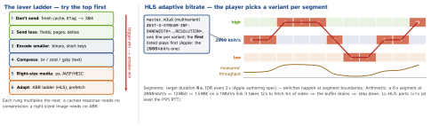

networking · folio
In one line: The cheapest byte is the one never sent. Work down the ladder: don’t send (cache, 304), send less (fields, pages, deltas), encode smaller (binary, no names), compress (brotli / zstd / gzip), right-size media (pixels you display, modern formats), and adapt to the link (HLS). On mobile, fewer requests matter as much as fewer bytes: every one costs RTTs and radio time.
Download PDF Print view LaTeX source


Compression
- gzip (DEFLATE + 10-byte header + 8-byte CRC/size trailer, RFC 1952): everywhere. Brotli (
br, RFC 7932): built-in static dictionary of web text — best on text, slow at max level (pre-compress static assets). zstd (RFC 8878): fast, trainable dictionaries. - Negotiation:
Accept-Encoding→Content-Encoding+Vary: Accept-Encoding. URLSession decodes gzip, deflate, br itself; zstd came to the system networking stack in iOS 26.3 (WebKit, for Safari) — log your app’sAccept-Encodingbefore relying on it. - Request bodies are never compressed for you: compress, set
Content-Encoding, and make sure the server accepts it. Apple’sCompressionoffers zlib, LZFSE, LZ4, LZMA, brotli —COMPRESSION_ZLIBis raw DEFLATE (no gzip/zlib header). - Skip already-compressed data (JPEG, HEIC, MP4, zip) and tiny bodies (framing > saving).
Send less, encode smaller
- Field selection:
?fields=id,name, sparse fieldsets, or GraphQL — list endpoints return summaries, detail endpoints the rest. - Pagination: cursor-based (
after=<opaque>, stable under inserts) beats offset; page size tuned to one screen + a prefetch margin. - Delta sync:
since=<syncToken>returns only changes + tombstones; edits asPATCHwith JSON Merge Patch (RFC 7396) or JSON Patch (RFC 6902). - Binary: one record is 54 B as JSON, 16 B as protobuf (no names, no text digits); gzip narrows the gap on big payloads only.
- Batching: many small writes in one request (analytics, receipts) — fewer radio wakes, fewer server round trips. HTTP/2 makes requests cheap, not free.
Example — right-sized image + measuring the wire
let px = Int(side * traitCollection.displayScale) // 100 pt @3x = 300 px
var c = URLComponents(string: "https://img.example.com/p/42")!
c.queryItems = [URLQueryItem(name: "w", value: "\(px)")] // CDN resizes
var req = URLRequest(url: c.url!)
req.setValue("image/avif,image/webp,image/*;q=0.8",
forHTTPHeaderField: "Accept") // CDN negotiates + Vary: Accept
// URLSessionTaskDelegate, didFinishCollecting metrics:
let t = metrics.transactionMetrics.last!
let wire = t.countOfResponseBodyBytesReceived // compressed
let body = t.countOfResponseBodyBytesAfterDecoding // after br/gzip
log("ratio", Double(body) / Double(max(wire, 1)))Images and media
| format | Apple support | use |
|---|---|---|
| JPEG / PNG | always | baseline; PNG for flat art / alpha |
| HEIC | camera, iOS 11+ | device photos; convert for web / Android |
| WebP | Safari 14 / iOS 14 | web images, alpha, animation |
| AVIF | Safari 16 / iOS 16 | smallest photos; slow to encode |
| JPEG XL | Safari 17 / iOS 17 | lossless re-pack of existing JPEGs |
Size by pixels: request points × scale; a CDN resizes + converts on the fly. Tiny placeholder / progressive JPEG first. Video: HLS; cap on cellular with AVPlayerItem.preferredPeakBitRate / preferredMaximumResolution. AVPlayer plays HLS, not MPEG-DASH(unverified) (the ISO equivalent used on Android/web).
Transfer time = RTTs + bytes / bandwidth
| payload (1 KB = 1000 B) | 1 Mbit/s | 10 Mbit/s | 100 Mbit/s |
|---|---|---|---|
| 50 KB JSON page | 0.4 s | 40 ms | 4 ms |
| 500 KB photo | 4 s | 0.4 s | 40 ms |
| 1.5 MB 6 s HLS segment | 12 s | 1.2 s | 0.12 s |
| 5 MB unsized hero image | 40 s | 4 s | 0.4 s |
Pure serialisation, before RTTs and slow start. At 100 Mbit/s a 50 KB page is RTT-bound — so batch and reuse connections; at 1 Mbit/s bytes dominate — so shrink.
Prefetch and cache
Prefetch the next page while the radio is up (UICollectionViewDataSourcePrefetching, cancel in cancelPrefetchingForItemsAt). Hashed URLs + immutable; the rest ETag → 304. Low Data Mode: no prefetch, lower variants.
Traps
- Downloading a 4000-px photo for a 100-pt cell: bytes, decode time and memory all wasted.
- “HTTP/2 made batching pointless” — headers are cheap now; radio wakes and server work are not.
- Gzipping a request with
COMPRESSION_ZLIBand labelling itgzip— it is raw DEFLATE.